Native-scale production-rig motion studies 78e468a42bbcecdf74dba2945bed910f56f1ef45 · 30 frames, 3 × 60 Hz ticks per cell. Read left to right, then down. Cropped pixels are never resized in the PNG.
Isolated production rig studies at the settled native gameplay camera pixel scale, without world/HUD; fire rows include existing native muzzle/brass/vent pools and death rows include native corpse cue pools. No resizing of cropped pixels.
Actor animation inputs and warning durations are explicit presentation replays. Simulation is frozen and checked unchanged. They do not prove native attack acceptance, foot-world contact, combat priority, physics death, organic pacing or performance.
M10 melee attack studies replay the production snapshot phase adapter with native family timing; simulation stays frozen. Shock is replayed via the model status adapter when supported.
Marine and enemy death use the actual pooled Rapier ragdoll with a prescribed killing impulse. This is a presentation replay, not a native kill.
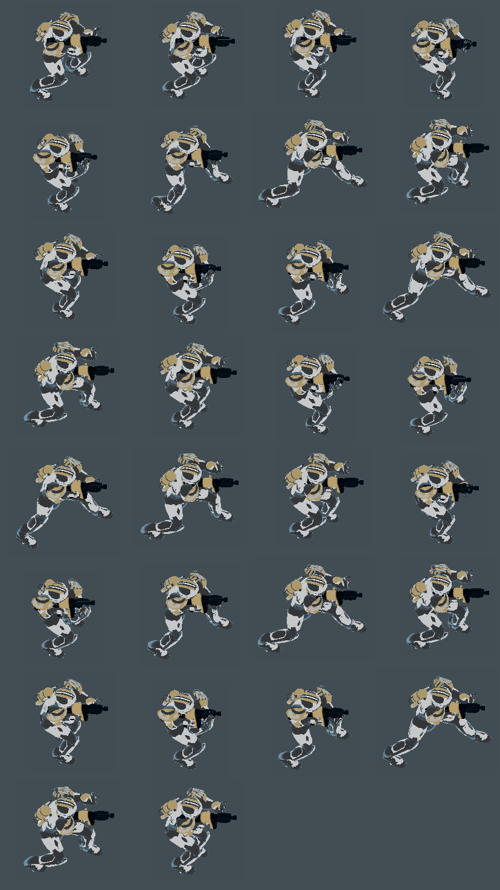
marine / run-0 · 30 frames · 50/100/150/200/250/300/350/400/450/500/550/600/650/700/750/800/850/900/950/1000/1050/1100/1150/1200/1250/1300/1350/1400/1450/1500 ms 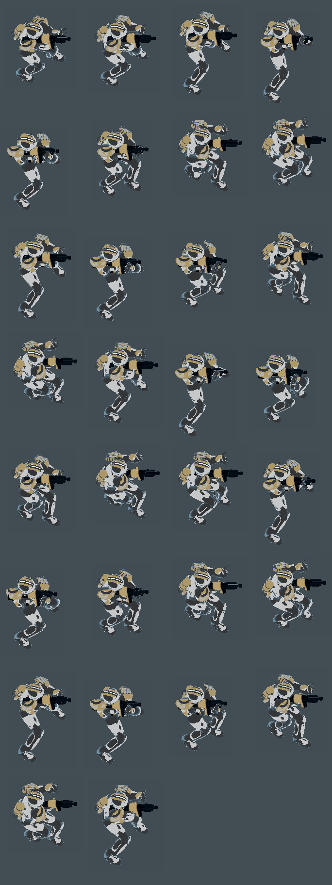
marine / run-90 · 30 frames · 50/100/150/200/250/300/350/400/450/500/550/600/650/700/750/800/850/900/950/1000/1050/1100/1150/1200/1250/1300/1350/1400/1450/1500 ms 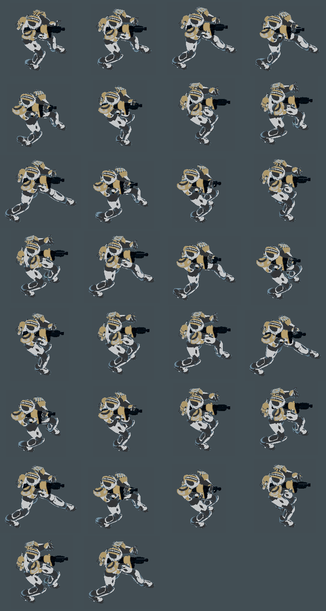
marine / run-180 · 30 frames · 50/100/150/200/250/300/350/400/450/500/550/600/650/700/750/800/850/900/950/1000/1050/1100/1150/1200/1250/1300/1350/1400/1450/1500 ms 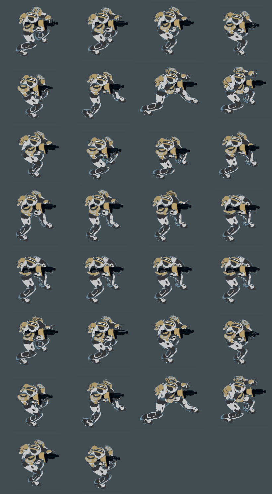
marine / stop-start · 30 frames · 50/100/150/200/250/300/350/400/450/500/550/600/650/700/750/800/850/900/950/1000/1050/1100/1150/1200/1250/1300/1350/1400/1450/1500 ms 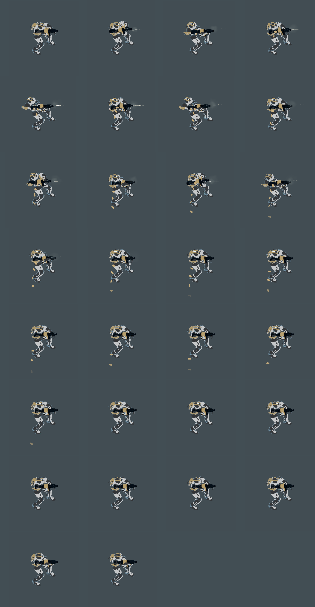
marine / fire-rifle · 30 frames · 50/100/150/200/250/300/350/400/450/500/550/600/650/700/750/800/850/900/950/1000/1050/1100/1150/1200/1250/1300/1350/1400/1450/1500 ms 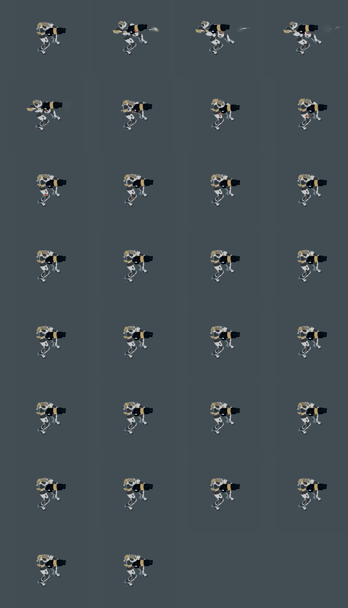
marine / fire-shotgun · 30 frames · 50/100/150/200/250/300/350/400/450/500/550/600/650/700/750/800/850/900/950/1000/1050/1100/1150/1200/1250/1300/1350/1400/1450/1500 ms 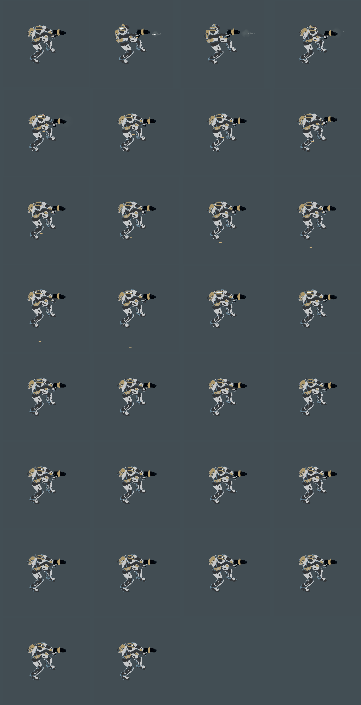
marine / fire-pistol · 30 frames · 50/100/150/200/250/300/350/400/450/500/550/600/650/700/750/800/850/900/950/1000/1050/1100/1150/1200/1250/1300/1350/1400/1450/1500 ms 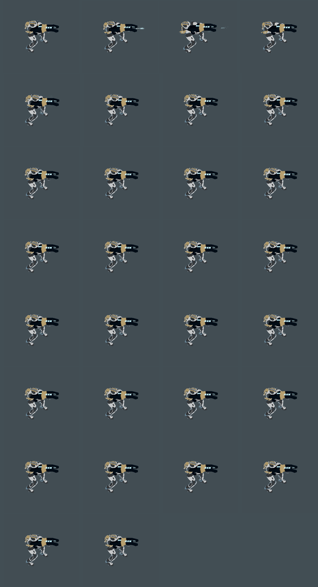
marine / fire-plasma · 30 frames · 50/100/150/200/250/300/350/400/450/500/550/600/650/700/750/800/850/900/950/1000/1050/1100/1150/1200/1250/1300/1350/1400/1450/1500 ms marine / fire-rocket · 30 frames · 50/100/150/200/250/300/350/400/450/500/550/600/650/700/750/800/850/900/950/1000/1050/1100/1150/1200/1250/1300/1350/1400/1450/1500 ms 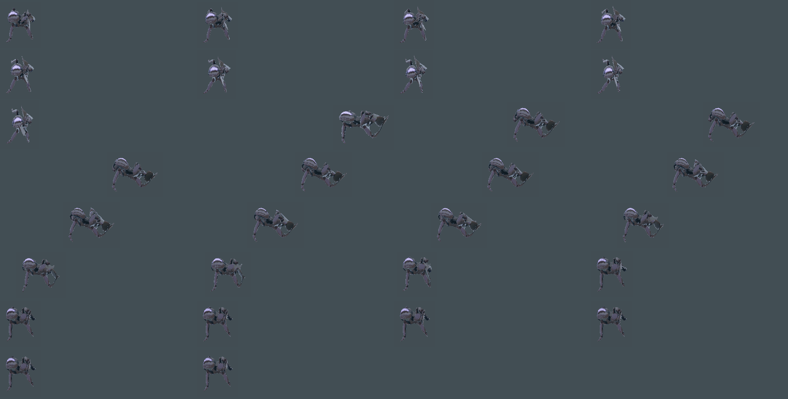
stalker / attack · 30 frames · 50/100/150/200/250/300/350/400/450/500/550/600/650/700/750/800/850/900/950/1000/1050/1100/1150/1200/1250/1300/1350/1400/1450/1500 ms stalker / weapon-hit-rifle · 30 frames · 50/100/150/200/250/300/350/400/450/500/550/600/650/700/750/800/850/900/950/1000/1050/1100/1150/1200/1250/1300/1350/1400/1450/1500 ms 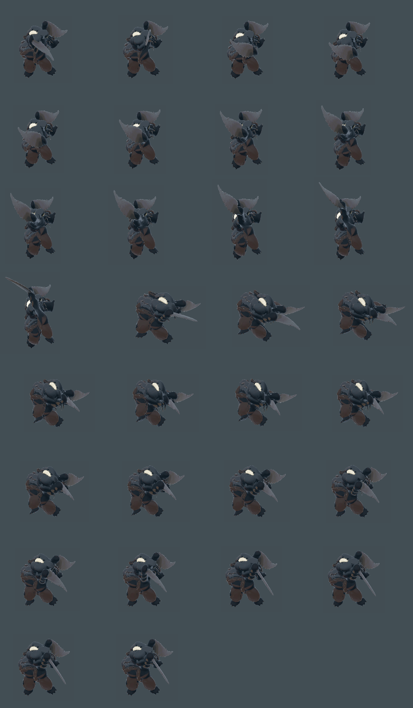
brute / attack · 30 frames · 50/100/150/200/250/300/350/400/450/500/550/600/650/700/750/800/850/900/950/1000/1050/1100/1150/1200/1250/1300/1350/1400/1450/1500 ms 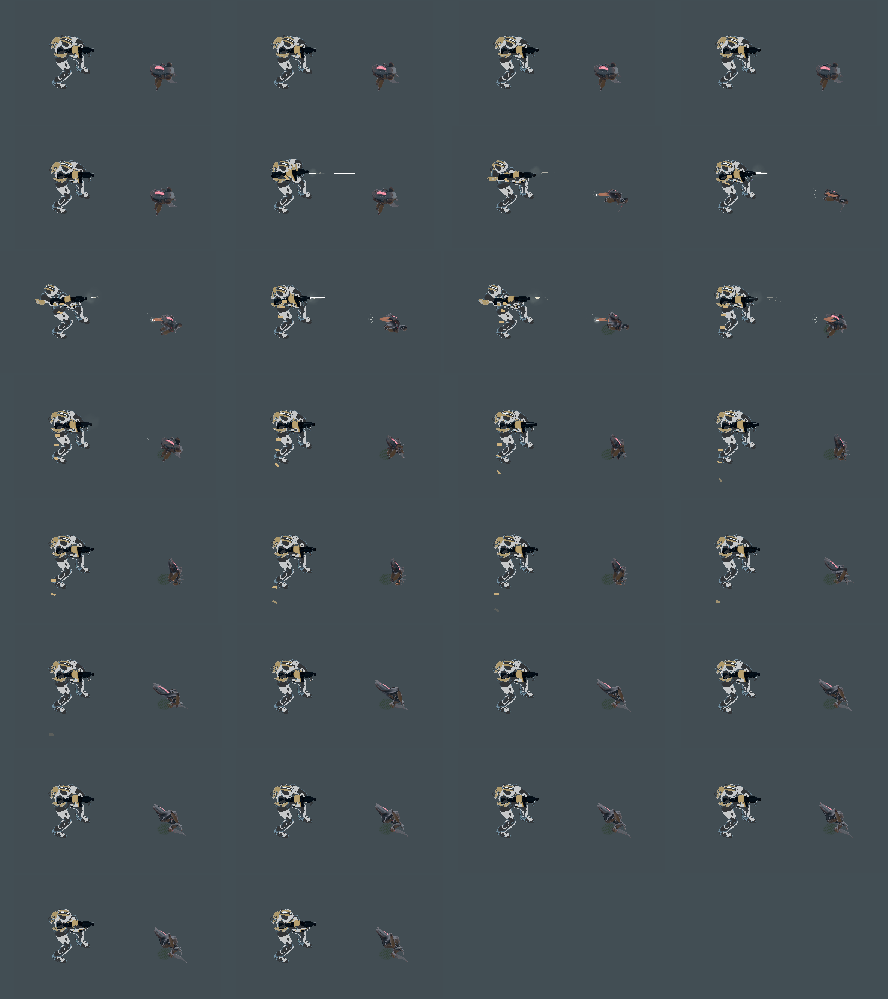
crawler / weapon-sequence-rifle · 30 frames · 50/100/150/200/250/300/350/400/450/500/550/600/650/700/750/800/850/900/950/1000/1050/1100/1150/1200/1250/1300/1350/1400/1450/1500 ms 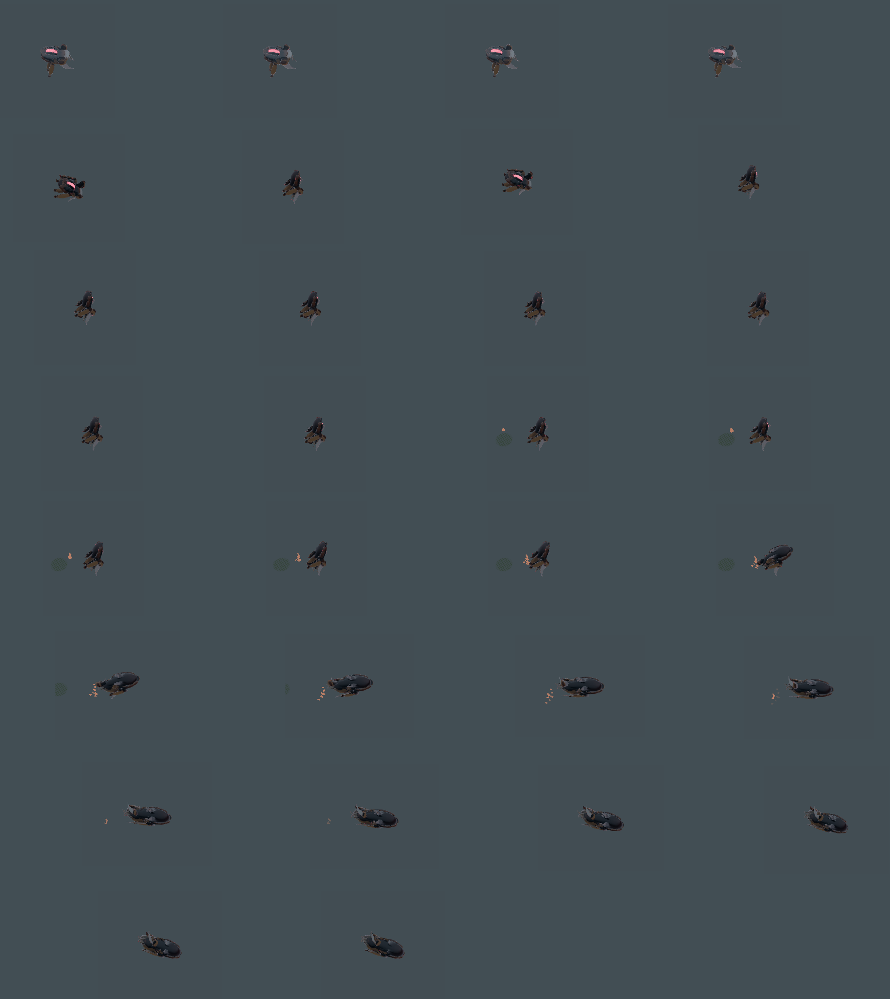
crawler / death-high-impulse · 30 frames · 50/100/150/200/250/300/350/400/450/500/550/600/650/700/750/800/850/900/950/1000/1050/1100/1150/1200/1250/1300/1350/1400/1450/1500 ms 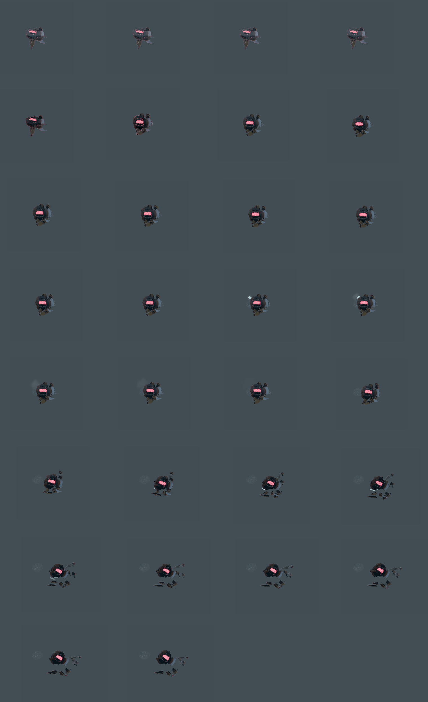
crawler / death-frost · 30 frames · 50/100/150/200/250/300/350/400/450/500/550/600/650/700/750/800/850/900/950/1000/1050/1100/1150/1200/1250/1300/1350/1400/1450/1500 ms 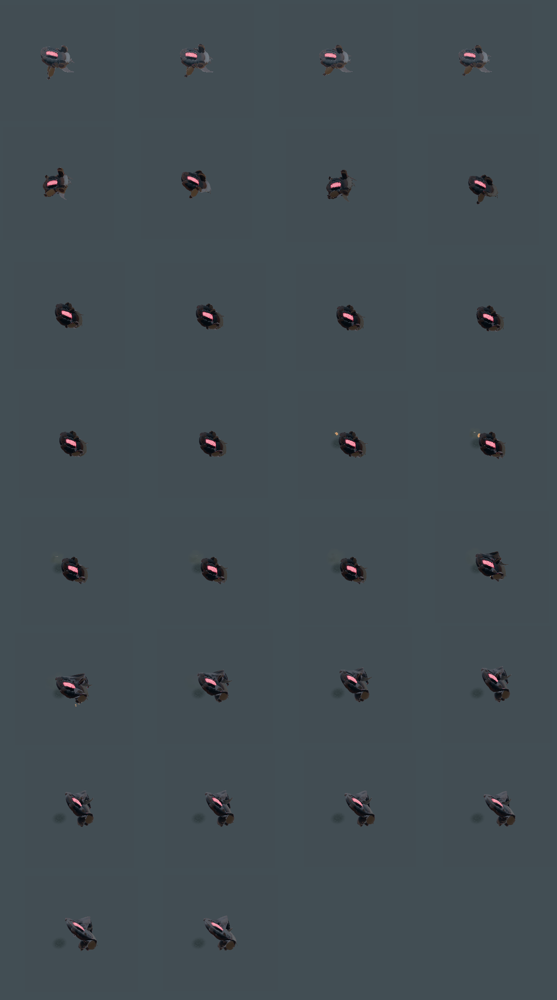
crawler / death-burn · 30 frames · 50/100/150/200/250/300/350/400/450/500/550/600/650/700/750/800/850/900/950/1000/1050/1100/1150/1200/1250/1300/1350/1400/1450/1500 ms 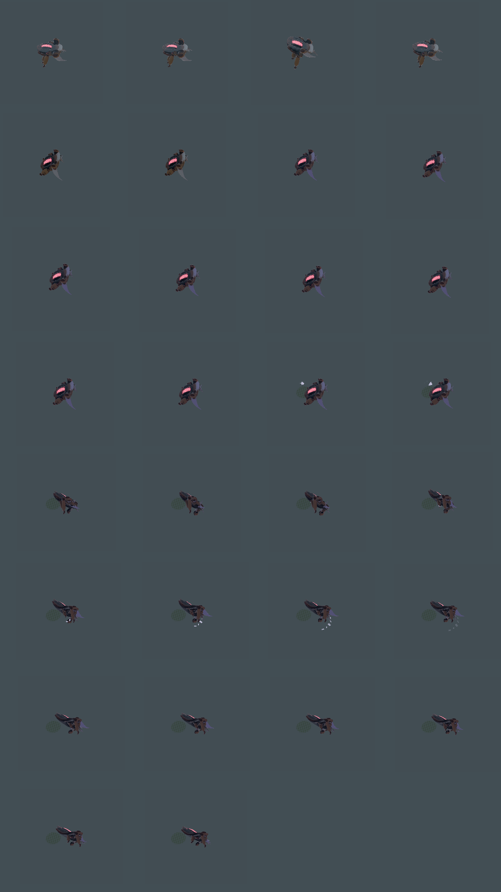
crawler / death-arc · 30 frames · 50/100/150/200/250/300/350/400/450/500/550/600/650/700/750/800/850/900/950/1000/1050/1100/1150/1200/1250/1300/1350/1400/1450/1500 ms 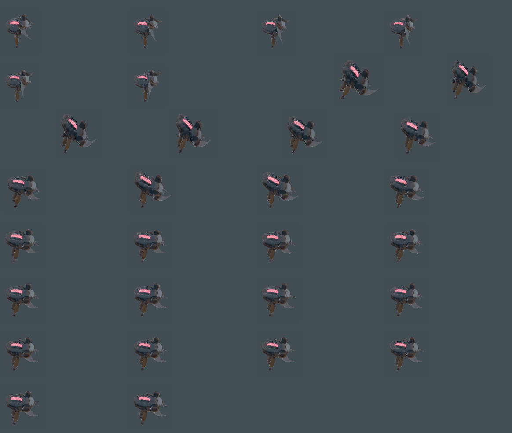
crawler / attack · 30 frames · 50/100/150/200/250/300/350/400/450/500/550/600/650/700/750/800/850/900/950/1000/1050/1100/1150/1200/1250/1300/1350/1400/1450/1500 ms 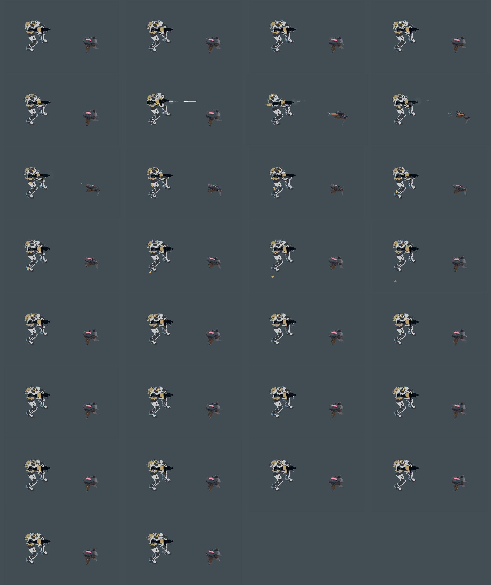
crawler / weapon-hit-rifle · 30 frames · 50/100/150/200/250/300/350/400/450/500/550/600/650/700/750/800/850/900/950/1000/1050/1100/1150/1200/1250/1300/1350/1400/1450/1500 ms 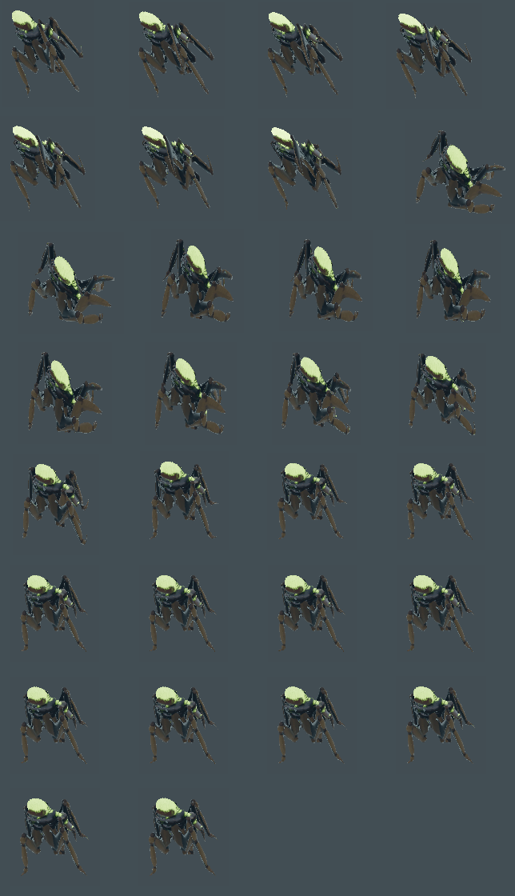
spitter / attack · 30 frames · 50/100/150/200/250/300/350/400/450/500/550/600/650/700/750/800/850/900/950/1000/1050/1100/1150/1200/1250/1300/1350/1400/1450/1500 ms spitter / weapon-hit-rifle · 30 frames · 50/100/150/200/250/300/350/400/450/500/550/600/650/700/750/800/850/900/950/1000/1050/1100/1150/1200/1250/1300/1350/1400/1450/1500 ms 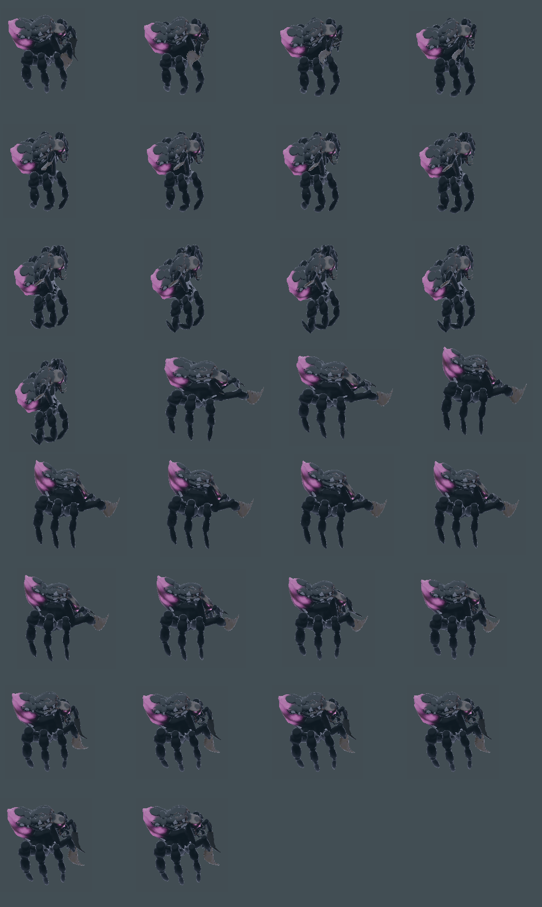
carrier / attack · 30 frames · 50/100/150/200/250/300/350/400/450/500/550/600/650/700/750/800/850/900/950/1000/1050/1100/1150/1200/1250/1300/1350/1400/1450/1500 ms